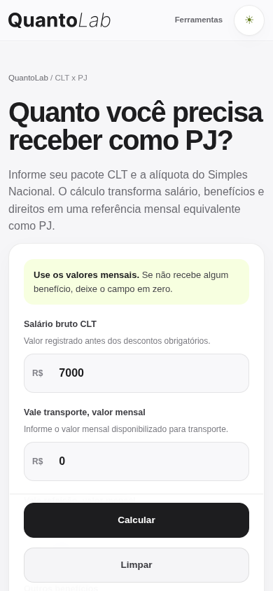
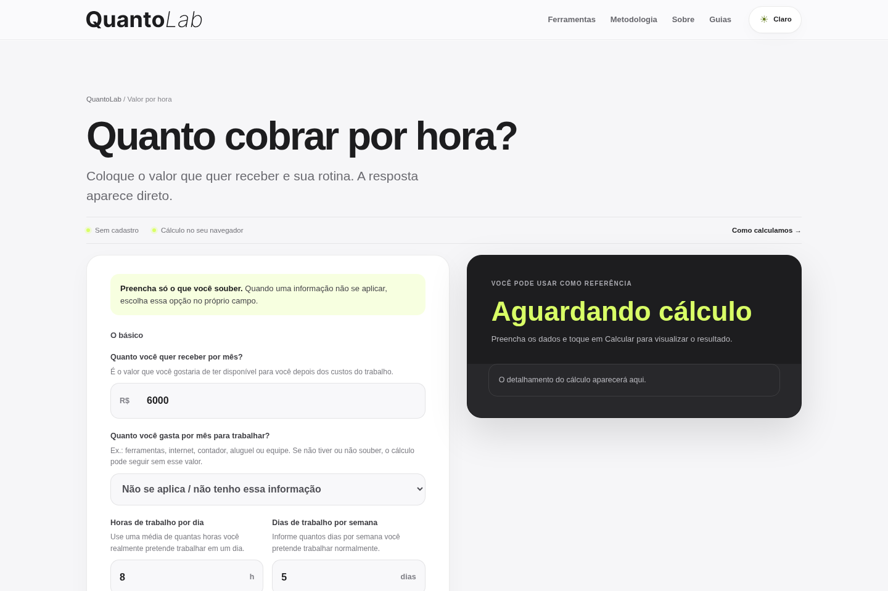
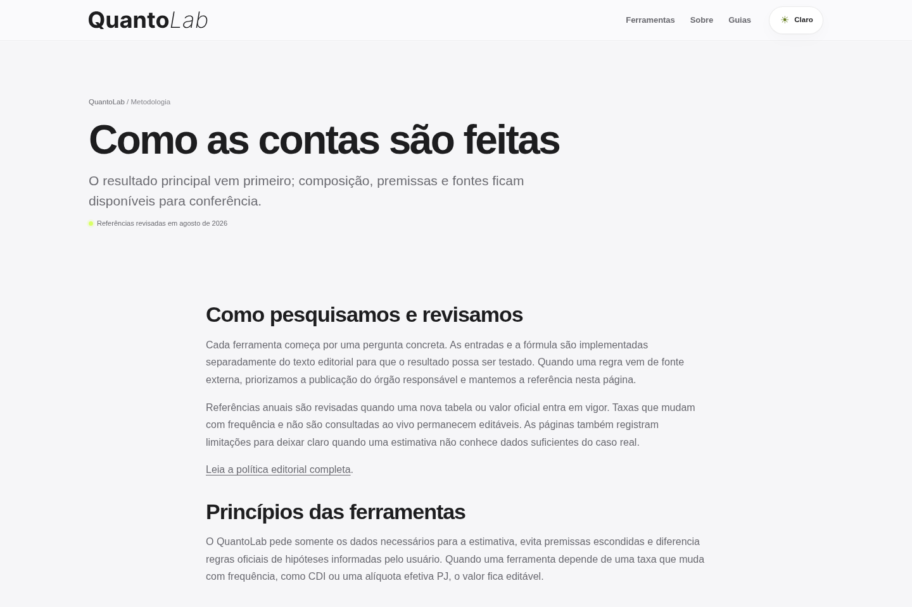

Show the essential answer before secondary composition and supporting detail.
Product Design2026 · Live product
QuantoLab
A decision-support product for work, career and money — designed to make the number understandable, checkable and useful.

A calculator can be mathematically correct and still be a poor product.
The product problem was confidence, not arithmetic.
People compare jobs, price freelance work and plan financial decisions with inputs they do not always understand. Returning a final number without context leaves the user with an answer but little confidence in what it means.
QuantoLab was structured so calculation, explanation, comparison and the next decision live in the same experience.
The hardest comparison became the reference flow.
CLT × PJ forces different forms of compensation into one comparable view. Salary, benefits, annual rights, taxes and recurring PJ costs cannot be reduced to two monthly numbers.
Start with familiar inputs.
The user begins with the values already present in the two proposals instead of being asked to understand the calculation model first.
Make the result inspectable.
The comparison is followed by the composition of the calculation so assumptions and intermediate values remain available.
Do not decide for the user.
The product quantifies the financial scenario without claiming that CLT or PJ is universally the better choice.
Same decision, different density
Mobile is not a compressed desktop.
The layout changes hierarchy and pacing so the calculation remains readable without reducing every element until it fits.

The system follows one repeatable product logic.
Fill→Calculate→Explain→Compare→Continue
Tools remain independent, but the behavior is consistent enough that users do not need to relearn the product for every new decision.
Designing one calculator was not enough.
The product needed a reusable interaction grammar that could handle different domains without turning every tool into a custom interface.


Trust had to be visible in the interface.
For professional and financial decisions, transparency is not supporting documentation. It is part of the product experience.
Keep formulas, assumptions and intermediate values available when they matter.
Connect changing rules to their methodology, year and source instead of hiding them behind the result.
No mandatory account is required to use the calculators, and unnecessary personal data is not part of the core flow.
A live system, not a portfolio prototype.
28tools available
0mandatory accounts
2026reference year when applicable
Adoption, conversion and usage claims are intentionally excluded until reliable product analytics are available.
A useful calculator is not the product. The product is the path from a question to a number the user can understand, verify and use.